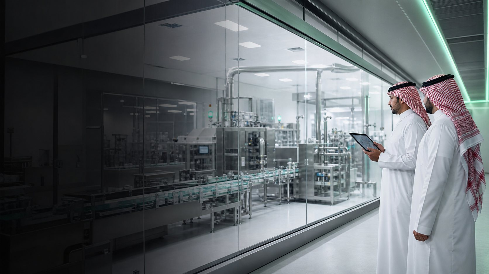
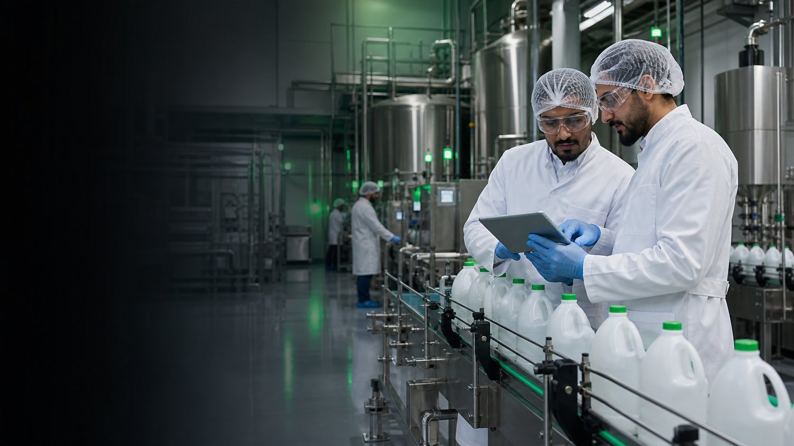
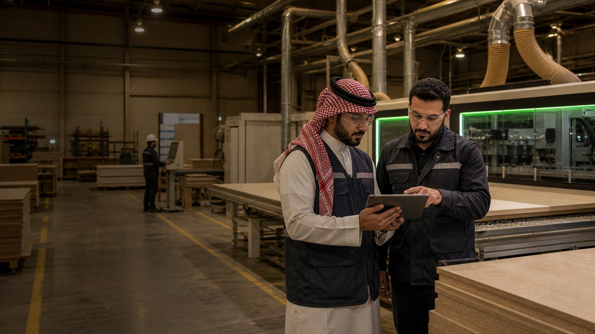

Life sciences
Saudi Pharmaceutical Manufacturer
A GMP-aware modernization case combining maturity assessment, investment feasibility and a phased digital operating roadmap.
View engagementSelected industrial experience
Three anonymized Saudi manufacturing engagements demonstrate how DigiLink connects maturity assessment, feasibility, transformation planning and implementation readiness.
Representative engagements
Each engagement starts with the factory's real operating context and ends with structured decisions, owners, sequencing and measurable success criteria.

Life sciences
A GMP-aware modernization case combining maturity assessment, investment feasibility and a phased digital operating roadmap.
View engagement
Process manufacturing
A formal readiness assessment translated into a detailed 16-dimension action plan for systems, production and governance.
View engagement
Discrete manufacturing
A twelve-month path from data and ERP discipline to connected equipment, performance visibility and targeted pilots.
View engagementHow evidence is presented
The case studies distinguish work DigiLink completed from performance targets that still depend on implementation.
Assessments, roadmaps, feasibility work, action registers, schedules and KPI frameworks are described as completed outputs.
Potential improvements in downtime, quality or productivity are not presented as achieved results without post-implementation evidence.
Names, sensitive scores, formulas, financials and proprietary operating information remain protected.
Your factory can be next
Start with a focused discussion about your factory, priorities and current readiness.